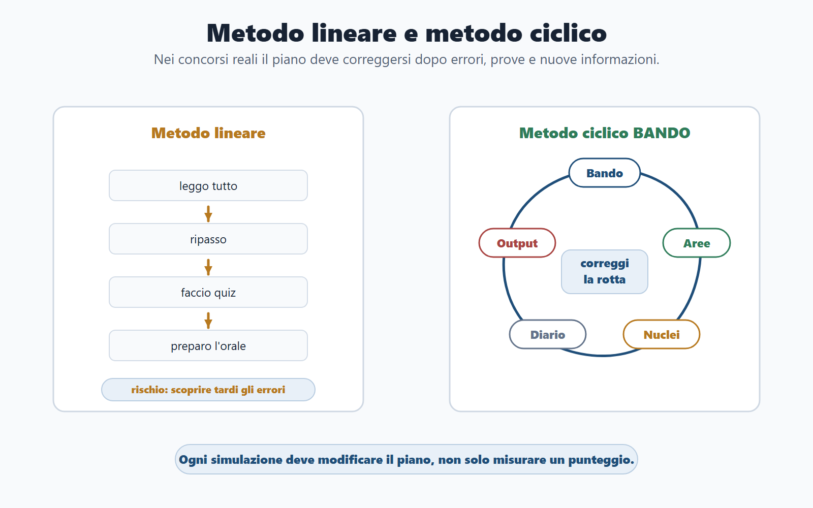
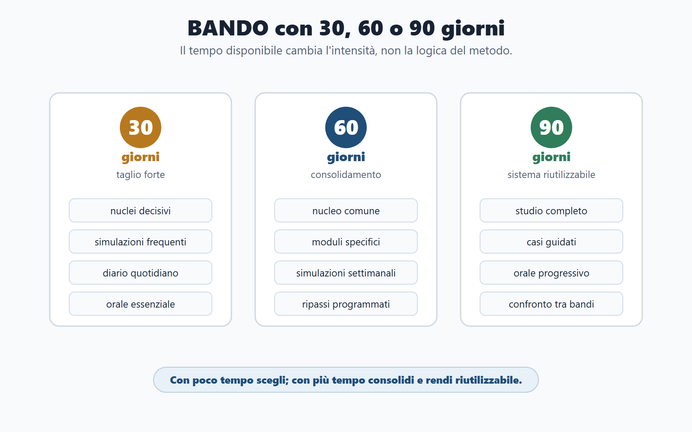
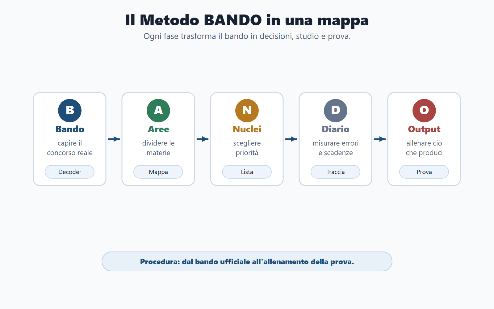
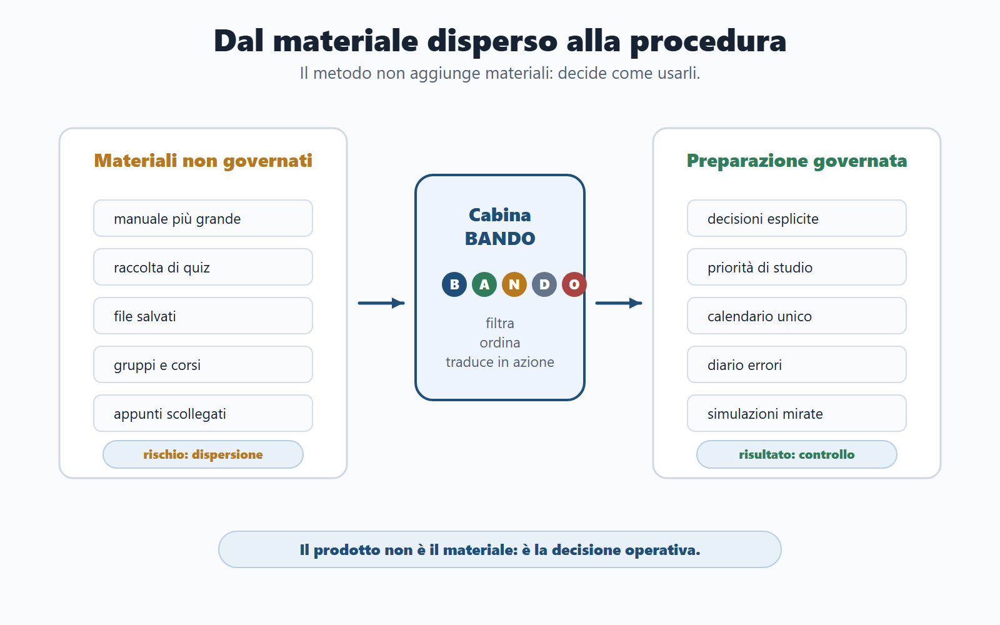
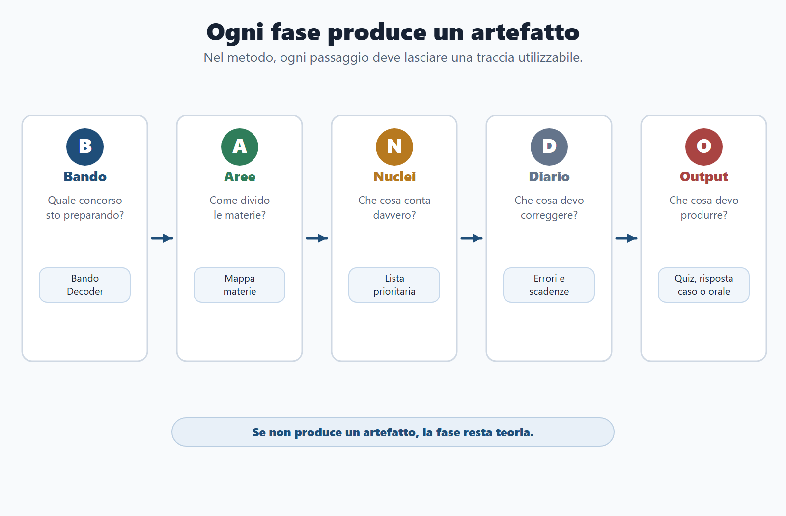

VOL-01 · Capitolo 03
Parte I · Il Metodo BANDO
Il Metodo BANDO
Molti candidati studiano, ma non governano la preparazione. Leggono pagine, fanno quiz, salvano file, seguono gruppi e corsi, ma non sempre sanno spiegare perché stanno studiando proprio quella materia, in quel modo, in quella settimana.
Schema
Metodo lineare vs ciclico

Schema
Piano bando 30 60 90

Schema
Metodo bando mappa generale

Schema
Materiali dispersi procedura bando

Schema
Fasi bando prodotti concreti

01 · Perché serve un metodo
Ordina i materiali e li traduce in decisioni
Un metodo non elimina lo studio. Evita di ricominciare da zero a ogni concorso. La concorrenza offre spesso un manuale più grande, una raccolta di quiz più lunga o un corso più fitto. Nessuna di queste cose risolve da sola il problema: decidere che cosa fare con il tempo che hai.
La domanda sbagliata
«Quale manuale è più completo?» Sposta il problema sui materiali. Puoi possedere fonti corrette e restare senza gerarchia, senza diario e senza output.
La domanda giusta
Quale prova devi superare e quale output devi produrre? Da qui derivano materie del nucleo, materie di profilo, priorità, errori da correggere e forma di allenamento.
02 · Schema generale
Cinque fasi, cinque prodotti concreti
BANDO è una procedura di lavoro, da applicare al bando che stai preparando. Ogni fase deve produrre un artefatto, non solo un’intenzione.
| Funzione | Prodotto concreto | |
|---|---|---|
| B — Bando | Capire il concorso reale. | Bando Decoder compilato. |
| A — Aree | Separare nucleo comune e moduli specifici. | Mappa delle materie. |
| N — Nuclei | Scegliere i concetti decisivi. | Lista prioritaria di studio. |
| D — Diario | Rendere visibili errori, scadenze e ripassi. | Diario errori e calendario. |
| O — Output | Allenare la forma della prova. | Quiz, risposta, caso, orale o simulazione. |
03 · B — Bando
Leggere il bando come documento di lavoro
Verifica se puoi partecipare, quale profilo viene selezionato, quali prove affronterai, quali materie saranno valutate, quali punteggi contano, quali soglie devi superare e quali scadenze devi rispettare. Se non hai compilato almeno una scheda sintetica, non hai ancora iniziato: hai solo raccolto materiali.
| Domanda della fase B | Se non rispondi |
|---|---|
| Posso partecipare? | Studi un concorso da cui potresti essere escluso. |
| Qual è il profilo reale? | Sbagli la profondità della risposta. |
| Quali prove? Quale elimina di più? | Alleni lo strumento sbagliato. |
| Quali materie sono indicate in modo espresso? | Segui l’indice del manuale. |
| Quali punteggi, soglie, scadenze e documenti? | La strategia resta opinione. |
04 · A — Aree
Il programma non è una lista piatta
Dividere le materie in aree impedisce due errori opposti: studiare tutto allo stesso modo oppure tagliare senza criterio. Non tutte le materie hanno lo stesso ruolo.
Area comune e di profilo
Comune: Costituzione, diritto amministrativo, pubblico impiego, trasparenza, competenze digitali. Di profilo: enti locali, organizzazione ministeriale, sanità amministrativa, giustizia, agenzie fiscali o altro settore. Il nucleo si riusa; il modulo si aggiunge.
Area di prova e di rischio
Di prova: logica, quiz, scritto, caso, orale, lingua, informatica. Di rischio: materie deboli, scadenze, documenti, ansia, tempo, errori ricorrenti. Qui si decide dove spostare le ore, non dove si «dovrebbe» studiare in astratto.
05 · N — Nuclei
Un nucleo non è il capitolo più lungo
Un nucleo è un concetto con alta probabilità di tornare, alta utilità trasversale o alto rischio di errore. È ciò che devi saper riconoscere, spiegare e usare.
| Materia | Esempi di nuclei |
|---|---|
| Diritto amministrativo | Procedimento, responsabile, provvedimento, accesso, silenzio, autotutela, responsabilità. |
| Pubblico impiego | Accesso tramite concorso, doveri, responsabilità, codice di comportamento, dirigenza, performance, conflitto di interessi. |
| Prova a quiz | Tempo, distrattori, errori ricorrenti e simulazioni. |
Se un argomento non sai trasformarlo in una definizione, un esempio e una domanda da commissario, non lo possiedi ancora. Il capitolo lungo del manuale può essere accessorio; il nucleo breve può decidere la prova.
06 · D — Diario
Se non registri un errore, è facile rifarlo
Il diario rende visibili le materie deboli e le decisioni da prendere. Una scadenza non annotata può sfuggire. Usalo per decidere che cosa ripassare, che cosa correggere e dove spostare il tempo.
| Elemento | A che cosa serve |
|---|---|
| Errori | Capire se sbagli per memoria, concetto, distrazione, tempo o strategia. |
| Ripassi | Programmare il ritorno sugli argomenti deboli, non rileggere a caso. |
| Scadenze | Controllare domanda, prove, documenti e comunicazioni ufficiali. |
| Decisioni | Tracciare tagli, priorità e cambi di piano, così il metodo resta visibile. |
07 · O — Output
Ogni blocco di studio finisce con un prodotto
Ogni concorso chiede di produrre qualcosa: risposta a quiz, risposta scritta, soluzione a un caso, esposizione orale, scelta situazionale, documento, griglia o procedura. Molti candidati confondono il possesso passivo dell’informazione con la capacità di usarla.
| Studio | Output minimo |
|---|---|
| Ho studiato una definizione. | La spiego in cinque righe. |
| Ho letto un capitolo. | Creo tre domande possibili. |
| Ho fatto quiz. | Classifico gli errori. |
| Ho studiato un caso. | Scrivo una soluzione ordinata. |
| Ho preparato l’orale. | Rispondo ad alta voce in due minuti. |
Leggere una spiegazione sul procedimento non equivale a rispondere all’orale. Sapere che esiste il conflitto di interessi non equivale a risolvere un caso. Fare quiz senza analizzare gli errori non equivale ad allenarsi.
08 · Ciclo, non linea
Il metodo tradizionale è lineare. BANDO è ciclico.
Leggo tutto, poi ripasso, poi quiz, poi orale: funziona solo se hai molto tempo, poche materie e una memoria stabile. Nei concorsi reali spesso non è così. Ogni simulazione modifica il piano; ogni errore cambia il ripasso; ogni nuova informazione del bando può spostare una priorità.
Bando
Decoder e perimetro reale.
Aree e nuclei
Mappa e lista prioritaria.
Diario e output
Errori e prestazione. Poi nuovo controllo del bando.
Il metodo non è rigido. È una struttura per correggere la rotta. Torni più volte su bando, aree, nuclei, diario e output. La linea unica «prima tutta la teoria» è rassicurante e spesso inefficace.
09 · Due esempi
Stesso metodo, due bandi diversi
Istruttore comunale
Bando: quiz e orale. Aree: nucleo comune, enti locali, pubblico impiego, trasparenza, informatica, inglese. Nuclei: procedimento, organi comunali, accesso, anticorruzione, doveri, quiz a tempo. Diario: errori su competenze degli organi, termini, accesso civico. Output: simulazioni a quiz, orali di due minuti, casi brevi su istanza del cittadino.
Assistente in ente centrale
Bando: base amministrativa, competenze digitali, inglese, organizzazione. Aree: materie comuni e organizzazione specifica dell’ente. Nuclei: amministrativo di base, pubblico impiego, documenti digitali, trasparenza, quiz. Diario: definizioni, sigle, competenze, distrazioni. Output: batterie a tempo, flashcard, risposte brevi. Un argomento interessante non è automaticamente prioritario.
10 · Tempo
30, 60 o 90 giorni: cambia l’intensità, non lo schema
Quando il tempo si riduce, non basta sapere che bisogna tagliare: serve un criterio. Il metodo cambia intensità in base ai giorni disponibili.
Taglio forte
Solo nuclei decisivi, simulazioni frequenti, diario errori quotidiano, orale essenziale. Niente dispersione: il tempo decide, non il manuale.
Consolidamento
Nucleo comune solido, moduli specifici, simulazioni settimanali, ripassi programmati. Hai spazio, non alibi per accumulare fonti.
Sistema riutilizzabile
Studio più completo, casi guidati, orale progressivo, consolidamento e confronto tra bandi. Il tempo in più serve a cicli, non a un altro volume.
11 · Più concorsi
Un calendario unico, non una cartella per ente
Il rischio è duplicare tutto: un manuale per ogni bando, un piano separato per ogni prova. È così che si perde controllo. Se due bandi condividono amministrativo, pubblico impiego, trasparenza e informatica, quelle materie devono diventare capitale comune.
| Passo | Che cosa fai |
|---|---|
| 1 | Individua il nucleo comune. |
| 2 | Costruisci un calendario unico. |
| 3 | Aggiungi moduli specifici per profilo. |
| 4 | Allena output diversi per prove diverse. |
| 5 | Usa un solo diario errori, con etichette per concorso. |
12 · Una pagina
Il mio concorso in una pagina
Compila questa scheda dopo aver letto il bando. Deve accompagnarti per tutto il percorso. Se non riesci a compilarla, il bando non è ancora stato capito abbastanza.
| Campo | A che cosa serve |
|---|---|
| Concorso, ente, profilo, prove | Identità della selezione e forma della prestazione. |
| Materie comuni, specifiche, killer | Gerarchia, non elenco piatto. |
| Scadenza domanda e prima simulazione | Tempo reale, non calendario immaginario. |
| Tre nuclei da studiare subito | La prima settimana ha già una direzione. |
| Primo errore da monitorare e output principale | Il diario e l’allenamento partono da un bersaglio, non da «tutto». |
13 · Verifica
Due domande da saper spiegare
Che cosa distingue BANDO da un normale piano di studio?
Un piano di studio distribuisce il tempo; il Metodo BANDO parte dal bando e collega tempo, materie, nuclei, errori e output. Non dice solo «quando studiare»: decide che cosa ha priorità, come va allenato e quale risultato deve produrre.
Con un metodo posso evitare di studiare molte parti del programma?
No. Il metodo non serve a giustificare superficialità. Serve a ordinare lo studio, scegliere le priorità e ridurre dispersione. Alcune parti si trattano in modo essenziale, altre in modo approfondito, ma la decisione deriva dal bando, non dalla voglia di tagliare.
14 · Da tenere ferme
Cinque regole, con il perché
1. BANDO è una procedura, non uno slogan. Perché se non hai Decoder, aree, nuclei, diario e un output, non stai ancora usando il metodo.
2. Il bando decide il perimetro reale dello studio. Perché senza di lui ogni pagina è opinione.
3. Le aree impediscono di confondere nucleo comune e moduli specifici. Perché trattare il programma come lista piatta brucia settimane.
4. I nuclei trasformano il programma in priorità. Perché il capitolo più lungo non coincide con ciò che decide la prova.
5. Diario e output rendono misurabile il miglioramento. Perché «aver letto» non è «saper produrre».
Prossimo capitolo
Costituzione e ordinamento dello Stato
Da qui le materie comuni. La Costituzione è la grammatica: principi, fonti, organi, diritti, autonomie e pubblica amministrazione, da usare in quiz, orale e risposte sintetiche.